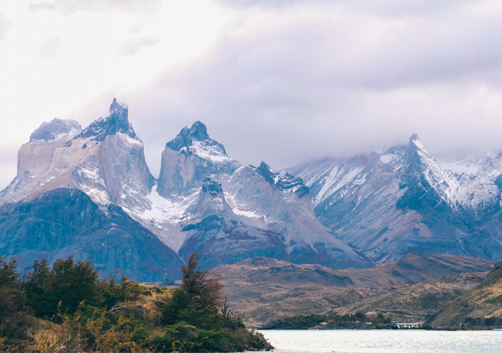

SENDEROS

Circuito W
Un trekking icónico que te guía por los paisajes más impresionantes de Torres del Paine, desde las famosas Torres hasta el glaciar Grey, ofreciendo vistas panorámicas inigualables en la Patagonia chilena.
Dificultad
Media - Alta
Duración
5 Días
Distancia
70 a 80 km